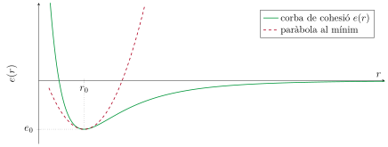
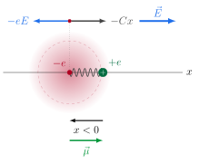
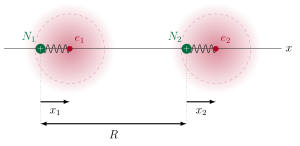
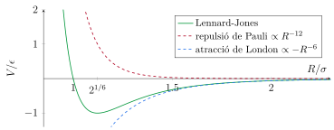
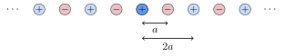
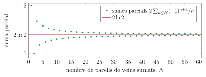
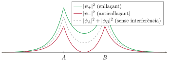
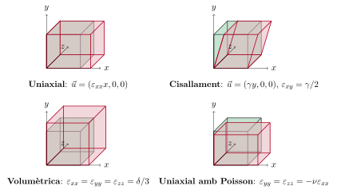
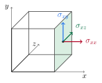
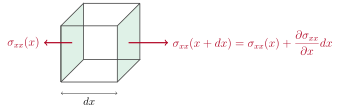

Als dos temes anteriors hem descrit on són els àtoms d'un cristall (Tema 1) i com ho sabem (Tema 2). La pregunta d'aquest tema és per què s'hi queden: un sòlid existeix perquè l'energia dels seus àtoms junts és menor que la dels mateixos àtoms separats. La diferència és l'energia de cohesió, i calcular-la vol dir entendre quina interacció manté els àtoms units.
Sigui quin sigui el mecanisme, la situació és sempre la mateixa. A distàncies grans, dos àtoms (o dos ions) s'atrauen, per alguna de les raons que veurem: fluctuacions de càrrega, atracció de Coulomb entre ions, electrons compartits. A distàncies curtes es repel·leixen sempre, i sempre per la mateixa raó: quan els núvols electrònics se solapen, el principi d'exclusió de Pauli obliga els electrons a ocupar estats d'energia més alta. La suma d'una atracció de llarg abast i d'una repulsió de curt abast dona una corba d'energia amb un mínim.

De la corba \(e(r)\) se'n treuen tres números, i cadascun es pot comparar amb un experiment diferent:
La posició del mínim, \(r_0\), fixa el paràmetre de xarxa, que ja sabem mesurar per difracció.
La profunditat, \(e_0\), és l'energia de cohesió, que es mesura per calorimetria.
La corbatura al mínim, la paràbola discontínua de la figura, és la rigidesa del cristall davant d'una compressió: el mòdul de compressibilitat, que es mesura comprimint el material o fent-hi passar ones sonores.
En les seccions 2, 3 i 4 veurem com es construeix aquesta corba per a tres tipus d'enllaç diferents; a la secció 5 veurem com extreure'n el mòdul de compressibilitat, i en la secció 6, com la rigidesa microscòpica es converteix en l'elasticitat macroscòpica d'un sòlid.
2 Cristalls de gasos nobles
El cas més senzill, i el més sorprenent, és el dels gasos nobles. Un àtom de neó o d'argó té les capes electròniques completes: és esfèric, no té moment dipolar permanent, no cedeix ni accepta electrons i no en comparteix. Res del que farem servir als cristalls iònics o covalents hi és aplicable. I tanmateix l'argó solidifica a \(84\) K en una xarxa FCC perfectament ordenada. L'únic mecanisme que queda són les fluctuacions de la distribució de càrrega: l'àtom és neutre i esfèric de mitjana, però no a cada instant.
2.1 Polaritzabilitat d'un àtom
Comencem per un sol àtom. En absència de camp, la distribució de càrrega electrònica està centrada exactament sobre el nucli. Si hi apliquem un camp elèctric extern \(\vec E\), el núvol electrònic es desplaça lleugerament respecte del nucli i apareix un dipol induït \(\vec\mu\):
Carregant la simulació…
Un àtom d'argó: nucli (verd) i núvol electrònic (vermell), amb el desplaçament exagerat tres vegades perquè es vegi. Arrossega la fletxa del camp \(\vec E\) (a dalt a la dreta) per canviar-ne la direcció i la intensitat. El núvol, que és negatiu, es desplaça en sentit contrari al camp, i el dipol induït \(\vec\mu\), que va de la càrrega negativa a la positiva, apunta en el sentit del camp. Posa el camp a zero: el dipol desapareix.
El model més simple que té aquesta propietat és un oscil·lador: imaginem que tota la càrrega electrònica, \(-e\), es comporta com una sola partícula de massa \(m\) lligada al nucli per una molla de constant \(C\). Sigui \(x\) el desplaçament del centre del núvol respecte del nucli.

Amb un camp \(E\) estàtic en la direcció \(+x\), sobre el núvol actuen dues forces: l'elèctrica, \(-eE\), i la de la molla, \(-Cx\). A l'equilibri es compensen:
\[-eE-Cx=0\quad\Longrightarrow\quad x=-\frac{eE}{C}.\]
El núvol es desplaça en sentit contrari al camp. El dipol va de la càrrega negativa a la positiva:
\[\mu=(+e)\cdot0+(-e)\,x=-ex=\frac{e^2}{C}\,E,\]
i comparant-ho amb la definició, \(\mu=\alpha E\):
\[\alpha=\frac{e^2}{C}=\frac{e^2}{m\omega_0^2},
\qquad
\omega_0=\sqrt{\frac{C}{m}} .\]
Sense camp, el núvol oscil·la al voltant del nucli amb el hamiltonià
\[H=\frac{p^2}{2m}+\frac12Cx^2,\]
i la freqüència pròpia \(\omega_0\) és la de les oscil·lacions del núvol electrònic, i \(\hbar\omega_0\) és de l'ordre de les energies d'excitació electrònica de l'àtom, uns quants eV.
2.2 Interacció entre dos àtoms: la força de London
Posem ara dos d'aquests àtoms, en una dimensió, amb els nuclis fixos a \(x=0\) i a \(x=R\), i amb els centres dels núvols electrònics desplaçats \(x_1\) i \(x_2\) respecte del seu nucli, de manera que les seves coordenades absolutes són \(x_1\) i \(R+x_2\):

El hamiltonià té dues parts. La primera són els dos oscil·ladors lliures,
\[H_0=\frac{p_1^2}{2m}+\frac12Cx_1^2+\frac{p_2^2}{2m}+\frac12Cx_2^2 ,\]
i la segona són les quatre interaccions de Coulomb entre càrregues d'àtoms diferents (escrivim \(k=1/4\pi\varepsilon_0\)): la dels dos nuclis, la dels dos electrons, i la de cada electró amb el nucli de l'altre àtom. (Les interaccions de cada nucli amb el seu propi electró ja estan comptades en l'oscil·lador harmònic).
\[H_1=ke^2\left[\frac1R+\frac1{R+x_2-x_1}-\frac1{R-x_1}-\frac1{R+x_2}\right].\]
Com que \(x_1,x_2\ll R\), desenvolupem cada terme en potències fent servir \(\frac{1}{R+s}=\frac1R\big(1-\frac sR+\frac{s^2}{R^2}-\cdots\big)\) amb \(s\) igual a \(x_2-x_1\), a \(-x_1\) i a \(x_2\) respectivament:
\[\begin{aligned}
\frac1{R+x_2-x_1}&\simeq\frac1R\left[1-\frac{x_2-x_1}{R}+\frac{(x_2-x_1)^2}{R^2}\right],\\[6pt]
\frac1{R-x_1}&\simeq\frac1R\left[1+\frac{x_1}{R}+\frac{x_1^2}{R^2}\right],\\[6pt]
\frac1{R+x_2}&\simeq\frac1R\left[1-\frac{x_2}{R}+\frac{x_2^2}{R^2}\right].
\end{aligned}\]
Sumem ordre a ordre. A ordre zero, \(1+1-1-1=0\): els dos àtoms són neutres i, vistos de lluny, no interaccionen. A primer ordre, \(-(x_2-x_1)-x_1+x_2=0\): cap dels dos té un dipol permanent, de manera que tampoc hi ha interacció dipol–càrrega. A segon ordre,
\[(x_2-x_1)^2-x_1^2-x_2^2=-2x_1x_2 ,\]
i aquest és l'únic terme que sobreviu:
\[H_1\simeq-\frac{2ke^2}{R^3}\,x_1x_2 . \tag{1}\]
És la interacció entre el dipol instantani \(ex_1\) d'un àtom i el dipol instantani \(ex_2\) de l'altre, que decau com \(1/R^3\) com qualsevol interacció dipol–dipol. Clàssicament, si els dos àtoms estiguessin en repòs (\(x_1=x_2=0\)) aquest terme valdria zero i no hi hauria cap força. La força apareix perquè els oscil·ladors no poden estar en repòs.
El terme (1) acobla els dos oscil·ladors. Per desacoblar-los passem a les coordenades simètrica i antisimètrica,
\[x_s=\frac{x_1+x_2}{\sqrt2},\qquad x_a=\frac{x_1-x_2}{\sqrt2}
\quad\Longrightarrow\quad
x_1^2+x_2^2=x_s^2+x_a^2,\qquad x_1x_2=\frac{x_s^2-x_a^2}{2},\]
i el mateix per als moments,
\[p_s=\frac{p_1+p_2}{\sqrt2},\qquad p_a=\frac{p_1-p_2}{\sqrt2}
\quad\Longrightarrow\quad
\frac{p_1^2}{2m}+\frac{p_2^2}{2m}=\frac{p_s^2}{2m}+\frac{p_a^2}{2m},\]
de manera que l'energia cinètica es separa igual. L'energia potencial total queda com la suma de dos oscil·ladors independents amb constants diferents,
\[\frac12C(x_1^2+x_2^2)-\frac{2ke^2}{R^3}x_1x_2
=\frac12\left(C-\frac{2ke^2}{R^3}\right)x_s^2+\frac12\left(C+\frac{2ke^2}{R^3}\right)x_a^2 ,\]
de freqüències
\[\omega_{s}=\omega_0\sqrt{1-y},\qquad \omega_a=\omega_0\sqrt{1+y},\qquad y\equiv\frac{2ke^2}{CR^3}\ll1 .\]
El mode simètric (els dos dipols oscil·len en fase, en la mateixa direcció) és més tou que l'oscil·lador aïllat; l'antisimètric, més rígid. Fins aquí tot és clàssic, i clàssicament l'energia mínima del sistema continua sent zero. La diferència arriba amb la quàntica: un oscil·lador de freqüència \(\omega\) té, en el seu estat fonamental, una energia \(\frac12\hbar\omega\) que no es pot eliminar. L'energia de l'estat fonamental dels dos àtoms acoblats és per tant
\[U=\frac12\hbar(\omega_s+\omega_a)=\frac12\hbar\omega_0\left(\sqrt{1-y}+\sqrt{1+y}\right).\]
Desenvolupant \(\sqrt{1\pm y}\simeq1\pm\frac y2-\frac{y^2}8\), els termes lineals es cancel·len i els quadràtics se sumen:
\[U\simeq\frac12\hbar\omega_0\left(2-\frac{y^2}{4}\right)=\hbar\omega_0-\frac{\hbar\omega_0}{8}\,y^2 .\]
El primer terme, \(\hbar\omega_0\), és l'energia de punt zero de dos àtoms independents. El segon és l'efecte de l'acoblament, i és negatiu:
\[\Delta U(R)=-\frac{\hbar\omega_0}{8}\left(\frac{2ke^2}{CR^3}\right)^{\!2}
=-\frac{\hbar\omega_0}{2}\,\frac{(k\alpha)^2}{R^6}\equiv-\frac{A}{R^6}, \tag{2}\]
on a l'últim pas hem fet servir \(\alpha=e^2/C\). Acoblar els dos àtoms abaixa l'energia: s'atrauen.
2.3 Correlació entre dipols
El càlcul anterior dona l'energia, però no diu què fan els dipols. A l'estat fonamental dels dos oscil·ladors acoblats, cada mode normal fluctua amb una amplitud que és inversament proporcional a l'arrel de la seva freqüència, \(\langle x_{s,a}^2\rangle=\hbar/(2m\omega_{s,a})\). El mode simètric és el més tou (\(\omega_s<\omega_a\)) i, per tant, el que fluctua més. Tornant a les coordenades originals,
\[\langle x_1x_2\rangle=\tfrac12\big(\langle x_s^2\rangle-\langle x_a^2\rangle\big)=\frac{\hbar}{4m}\left(\frac1{\omega_s}-\frac1{\omega_a}\right)>0 .\]
Cada dipol continua fluctuant a l'atzar, amb mitjana zero, però ara ho fa de manera correlacionada: els dos dipols tendeixen a apuntar en el mateix sentit. Com que \(H_1\propto-x_1x_2\), aquesta correlació és exactament el que fa que \(\langle H_1\rangle<0\) i els àtoms s'atreguin. Per a l'argó, a la distància del sòlid, el coeficient de correlació és només d'un \(3\%\): per això la força és tan feble.
Carregant la simulació…
Esquerra: freqüències dels dos modes normals en funció de la distància, per a l'argó. Dreta: mostres de l'estat fonamental al pla \((x_1,x_2)\), amb l'acoblament exagerat deu vegades perquè es vegi; les el·lipses són contorns de \(|\psi_0|^2\), estirades al llarg de l'eix simètric \(x_s\) (la diagonal \(x_1=x_2\)) i comprimides al llarg de l'antisimètric \(x_a\) (la diagonal \(x_1=-x_2\)).
Carregant la simulació…
Energia d'interacció de dos àtoms d'argó: el model d'oscil·ladors acoblats (verd), la seva aproximació \(-A/R^6\) (taronja), l'atracció ajustada a l'experiment, \(-4\epsilon\sigma^6/R^6\) (blau), i el potencial de Lennard-Jones complet (gris), que inclou la repulsió de la secció següent.
2.4 Potencial de Lennard-Jones
Si només hi hagués l'atracció (2) els àtoms col·lapsarien. Quan dos àtoms s'apropen prou perquè els seus núvols electrònics se solapin, apareix una repulsió molt forta i de molt curt abast. El seu origen és el principi d'exclusió de Pauli: els electrons de les capes completes dels dos àtoms no poden ocupar els mateixos estats, i part d'ells ha de passar a estats d'energia més alta. L'energia creix molt ràpidament en disminuir \(R\), aproximadament de manera exponencial. Per comoditat de càlcul se sol representar amb una potència, \(B/R^{12}\), i sumant-hi l'atracció de London s'obté el potencial de parell més utilitzat de tota la física:

2.5 Energia del cristall: sumes de xarxa
En un cristall cada àtom interacciona amb tots els altres, no només amb el més proper. Si la interacció és de parells i additiva, l'energia total de \(N\) àtoms és la suma sobre tots els parells, és a dir, \(\frac12 N\) vegades la suma de la interacció d'un àtom amb tots els altres (el \(\frac12\) és perquè cada parell s'ha comptat dues vegades). Anomenem \(r\) la distància al veí més proper i escrivim la distància a l'àtom \(j\) com \(p_jr\), on \(p_j\) és un nombre adimensional que només depèn de la xarxa. L'energia per àtom és
\[e(r)=\frac12\sum_{j}V(p_jr)=2\epsilon\left[A_{12}\left(\frac{\sigma}{r}\right)^{12}-A_{6}\left(\frac{\sigma}{r}\right)^{6}\right],
\qquad
A_{n}\equiv\sum_j\frac{1}{p_j^{\,n}} .\]
Les dues sumes de xarxa \(A_{12}\) i \(A_6\) són números purs que es calculen una sola vegada per a cada estructura. Per a la FCC, on cada àtom té \(12\) veïns a \(p=1\), \(6\) a \(p=\sqrt2\), \(24\) a \(p=\sqrt3\), \(12\) a \(p=2\), etc., valen
\[A_{12}=12.13188,\qquad A_6=14.45392 .\]
Cal notar que \(A_{12}\) és gairebé \(12\): amb un exponent tan gran, pràcticament només compten els primers veïns. \(A_6\) ja se n'allunya un \(20\%\), perquè l'atracció arriba una mica més lluny.
Les sumes \(A_{12}\) i \(A_6\) es construeixen capa a capa. Amb un exponent tan alt, \(A_{12}\) ja és un \(99\%\) del total amb la primera capa; \(A_6\) només n'és el \(83\%\), i necessita unes quantes capes més. La figura ho mostra per a la FCC, juntament amb l'efecte de passar del parell al cristall: el pou és \(8.6\) vegades més fondo i el mínim, més a prop.
Carregant la simulació…
A dalt a l'esquerra: les tres primeres capes de veïns de la FCC (\(12+6+24\)); arrossega per girar-les. A dalt a la dreta: potencial d'un parell (gris) i energia per àtom del cristall FCC (verd), en unitats de \(\epsilon\) i \(\sigma\).A sota: convergència de \(A_{12}\) (vermell) i \(A_6\) (blau) en funció del radi de la suma. Amb el control pots afegir o treure capes.
2.6 Gasos nobles: teoria i experiment
Ara podem fer la prova de debò: agafar \(\epsilon\) i \(\sigma\) mesurats al gas, i predir el sòlid.
\(\epsilon\) (meV)
\(\sigma\) (Å)
\(r_0=1.09\,\sigma\)
\(r_0\) experimental
\(8.61\,\epsilon\) (meV)
\(E_{\text{coh}}\) exp. (meV)
Ne
3.1
2.74
2.99
3.13
27
20
Ar
10.4
3.40
3.71
3.76
90
80
Kr
14.0
3.65
3.98
4.01
121
116
Xe
20.0
3.98
4.34
4.35
172
170
L'acord és excel·lent per al xenó i el criptó, bo per a l'argó i només aproximat per al neó. La tendència és sistemàtica: com més lleuger és l'àtom, més gran surt la distància experimental respecte de la predita i més petita l'energia de cohesió. És exactament l'efecte del moviment de punt zero dels nuclis que havíem deixat fora a la secció 1: un nucli lleuger confinat al pou té una energia cinètica que infla el cristall i en redueix la lligadura. Per a l'heli, que ni tan sols apareix a la taula, aquest efecte guanya i el sòlid no es forma.
3 Cristalls iònics
El segon mecanisme és el més clàssic de tots. Quan s'ajunten un element amb un electró de més respecte d'una capa tancada (un alcalí, com el sodi) i un amb un electró de menys (un halogen, com el clor), l'electró passa d'un a l'altre i queden dos ions de capes completes, Na\(^+\) i Cl\(^-\), esfèrics i estables. Arrencar l'electró del sodi costa \(5.14\) eV (energia d'ionització) i posar-lo al clor en retorna \(3.61\) eV (afinitat electrònica): la transferència, per si sola, costa \(1.53\) eV per parell. El que la fa rendible és l'atracció de Coulomb entre els ions resultants, molt més intensa que la de London.
3.1 Energia de Coulomb
L'energia d'interacció de dos ions de càrregues \(q_i\) i \(q_j\) separats una distància \(r_{ij}\) és la de Coulomb, \(kq_iq_j/r_{ij}\). Com que decau només com \(1/r\), aquí no podem quedar-nos amb els primers veïns: l'energia d'un ió \(i\) és la suma sobre tots els altres ions de la xarxa,
\[U_i=\sum_{j\neq i}\frac{kq_iq_j}{r_{ij}} .\]
En una xarxa amb dos tipus d'ions de càrregues \(\pm q\), escrivim cada distància com \(r_{ij}=p_jr\), amb \(r\) la distància al veí més proper, i treiem factor comú:
\[U_i=-\frac{kq^2}{r}\sum_{j\neq i}\frac{\pm1}{p_j}\equiv-\frac{kq^2}{r}\,M , \tag{3}\]
amb el signe \(+\) per als veïns de càrrega oposada (atractius) i el \(-\) per als de la mateixa càrrega.
3.2 Constant de Madelung: cadena iònica
En una cadena infinita d'ions alterns \(+q,-q,+q,\dots\) separats una distància \(a\), els veïns d'un ió donat són, a cada banda, un de càrrega oposada a distància \(a\), un de la mateixa a \(2a\), un d'oposada a \(3a\), i així successivament:


3.3 Constant de Madelung en 3D
Que una sèrie sigui condicionalment convergent vol dir que el seu valor depèn de l'ordre en què se'n sumen els termes. Sumar capa a capa per distància és l'ordre natural, però és un mal ordre: cada capa esfèrica té una càrrega neta, a vegades positiva i a vegades negativa, que no es compensa amb la següent. La regió sumada és una esfera carregada, i el seu potencial al centre salta d'un signe a l'altre a mesura que creix.
La solució, deguda a Evjen, és sumar per regions elèctricament neutres. Al NaCl es prenen cubs centrats en l'ió de referència, i els ions de la superfície de cada cub es reparteixen amb els cubs veïns: els de les cares hi compten amb pes \(\tfrac12\), els de les arestes amb \(\tfrac14\) i els dels vèrtexs amb \(\tfrac18\). Cada cub és neutre, i la convergència és molt ràpida: \(1.456\) amb el cub més petit, \(1.752\) amb el següent, \(1.7476\) a la quarta xifra poc després.
Carregant la simulació…
Esquerra: sumes parcials de \(M\) per al NaCl, per capes esfèriques (taronja) i per cubs neutres d'Evjen (verd). Dreta: el pla \(z=0\) amb els ions inclosos a la suma. Amb els botons passes d'una esfera (amb càrrega neta) a un cub d'Evjen (neutre, amb els ions de la vora a pes fraccionari).
Els valors de la taula següent estan calculats d'aquesta manera.
Estructura
Exemples
Xarxa de Bravais
\(M\)
Clorur de sodi
NaCl, KCl, MgO, TiC
FCC, base de 2 ions
1.7476
Clorur de cesi
CsCl
cúbica simple, base de 2 ions
1.7627
Blenda de zinc
ZnS, GaAs
FCC, base de 2 ions
1.6381
Wurtzita
ZnS, ZnO
hexagonal
1.6413
Fluorita
CaF\(_2\)
FCC, base de 3 ions
2.5194
Rutil
TiO\(_2\)
tetragonal
2.4080
Totes les estructures amb un ió de cada signe per fórmula tenen \(M\) entre \(1.6\) i \(1.8\): la constant de Madelung no distingeix gaire entre elles, i la que acaba apareixent la decideix la mida relativa dels ions (quants ions grans caben al voltant d'un de petit sense tocar-se). Per a la fluorita i el rutil \(M\) és més gran perquè hi ha dos anions per catió i l'energia es compta per fórmula \(AB_2\).
3.4 Energia de cohesió iònica
Igual que als gasos nobles, cal un terme repulsiu de curt abast que impedeixi que els ions col·lapsin, i té el mateix origen (l'exclusió de Pauli entre les capes tancades dels dos ions). El representem com \(C/r^m\), amb \(m\) un exponent que ara deixem lliure, i que per als halurs alcalins val entre \(6\) i \(10\). L'energia d'un ió amb tota la resta del cristall és
\[U(r)=-\frac{kq^2M}{r}+\frac{C}{r^m} .\]
L'energia total de \(N\) ions és \(\frac12NU\) (cada parell comptat una vegada), de manera que \(U(r)\) és també l'energia per parell d'ions, que és la quantitat que se sol tabular. La constant \(C\) no es coneix d'entrada, però es pot eliminar imposant que el mínim sigui a la distància \(r_0\) observada:
\[\frac{dU}{dr}=\frac{kq^2M}{r^2}-\frac{mC}{r^{m+1}}=0
\quad\Longrightarrow\quad
C=\frac{kq^2M}{m}\,r_0^{\,m-1} .\]
Substituint a \(U(r_0)\),\[U(r_0)=-\frac{kq^2M}{r_0}+\frac{kq^2M}{m\,r_0}=-\frac{kq^2M}{r_0}\left(1-\frac1m\right). \tag{4}\]
La repulsió només resta una fracció \(1/m\) de l'energia de Coulomb: amb \(m\sim8\), l'energia de lligadura és un \(88\%\) de la de Madelung. Això vol dir que, per a un cristall iònic, calcular l'energia de cohesió és essencialment calcular la constant de Madelung.
Carregant la simulació…
Corba de cohesió del NaCl, per ió. L'atracció de Coulomb (blau) decau com \(1/r\) i arriba molt lluny; la repulsió (vermell) només actua a curta distància.
4 Enllaç covalent
4.1 Electrons compartits
Els dos mecanismes anteriors tenen una limitació comuna. El de London és universal però feble: desenes de meV. El iònic és fort però necessita dos elements amb afinitats molt diferents, perquè hi hagi una transferència neta de càrrega. Cap dels dos explica com dos àtoms idèntics, dos carbonis o dos silicis, es mantenen units amb energies de l'ordre de l'eV per enllaç, comparables a les d'un cristall iònic. Entre dos àtoms iguals no hi pot haver transferència de càrrega. El que hi ha, en canvi, és un parell d'electrons compartit entre els dos nuclis alhora, i això abaixa l'energia per una raó que no té anàleg clàssic.
4.2 Enllaç covalent: l'ió H\(_2^+\)
El sistema més senzill amb un electró compartit entre dos nuclis és l'ió molecular d'hidrogen: dos protons, \(A\) i \(B\), a distància \(R\), i un sol electró. En lloc de resoldre l'equació de Schrödinger exactament, fem una aproximació variacional: provem com a funció d'ona una combinació lineal dels dos orbitals \(1s\) que l'electró tindria si només hi hagués un dels nuclis, \(\phi_A(\vec r)\) i \(\phi_B(\vec r)\). És el mètode LCAO (linear combination of atomic orbitals), i per simetria entre els dos nuclis només hi ha dues combinacions possibles:
\[\psi_\pm(\vec r)=\frac{\phi_A(\vec r)\pm\phi_B(\vec r)}{\sqrt{2(1\pm S)}},
\qquad
S=\int\phi_A^*\phi_B\,dV .\]
El denominador normalitza la funció d'ona i hi apareix la integral de solapament\(S\), que mesura quant se superposen els dos orbitals: val \(1\) si els nuclis coincideixen i tendeix a \(0\) quan \(R\to\infty\).
4.3 Estats enllaçant i antienllaçant
Per a orbitals \(1s\), les integrals es poden calcular exactament. En unitats atòmiques (\(R\) en radis de Bohr, energies en hartree, \(E_{1s}=-\tfrac12\)),
\[S=e^{-R}\Big(1+R+\tfrac{R^2}{3}\Big),\qquad
H_{AA}=E_{1s}-J+\frac1R,\qquad
H_{AB}=S\Big(E_{1s}+\frac1R\Big)-K,\]
amb \(J=[1-(1+R)e^{-2R}]/R\) l'atracció clàssica entre el núvol de \(A\) i el protó \(B\), i \(K=(1+R)e^{-R}\) la part de bescanvi. La figura en mostra el resultat.
Carregant la simulació…
Esquerra: energia dels estats enllaçant (\(E_+\)) i antienllaçant (\(E_-\)) en funció de la distància entre protons, i \(H_{AA}\), l'energia sense bescanvi. El punt negre és el resultat exacte. Dreta: els nivells a \(R=1.32\) Å: el bescanvi desdobla \(H_{AA}\) en \(E_+\) i \(E_-\).

Carregant la simulació…
El mateix, ara amb els orbitals 1s reals i en tres dimensions. Esquerra: densitat al llarg de l'eix. Dreta: \(|\psi_+|^2\) menys la densitat sense interferència, al pla de la molècula: la càrrega (vermell) s'acumula entre els protons. Amb el botó “\(\psi_-\): diferència” es veu el mateix per a \(|\psi_-|^2\): la càrrega fuig del centre (blau).
4.4 Direccionalitat de l'enllaç
En un cristall covalent real (diamant, silici, germani) cada àtom comparteix un parell d'electrons amb cadascun dels seus quatre veïns, pel mateix mecanisme, ara amb orbitals híbrids \(sp^3\) en lloc d'orbitals \(1s\) purs. La idea de fons no canvia: l'energia baixa com més se superposen els orbitals d'àtoms veïns. Però un orbital \(sp^3\) no és esfèric, té un lòbul apuntant en una direcció, i la superposició només és eficient si els veïns són exactament a les quatre direccions dels lòbuls, als vèrtexs d'un tetràedre. A diferència dels enllaços de London i iònic, que són isòtrops (depenen només de la distància), l'enllaç covalent és direccional. Al diamant, cada carboni té quatre veïns a \(1.54\) Å i l'energia de cohesió és de \(7.37\) eV per àtom, és a dir \(3.68\) eV per enllaç (dos enllaços per àtom).
Mecanisme
Qui s'uneix
Energia típica
Direccional?
Exemples
Van der Waals (London)
àtoms i molècules de capes tancades
10–200 meV per àtom
no
Ne, Ar, Kr, Xe, N\(_2\), CO\(_2\)
Iònic (Madelung)
elements d'afinitats molt diferents
5–10 eV per parell
no
NaCl, CsCl, MgO
Covalent (electrons compartits)
elements iguals o semblants
3–4 eV per enllaç
sí
C, Si, Ge, GaAs
Metàl·lic
electrons deslocalitzats (Tema 6)
1–5 eV per àtom
no
Na, Cu, Al, Fe
La taula hi afegeix el quart mecanisme, el metàl·lic, que no tractem en aquest tema: els electrons de valència es deslocalitzen per tot el cristall i la seva energia cinètica baixa en tenir més espai disponible. Necessita el llenguatge del gas d'electrons, que és el del Tema 6. En els materials reals els mecanismes es barregen: el TiC, per exemple, té l'estructura del NaCl i una transferència de càrrega real del titani al carboni, però el model iònic sol només explica una part de la seva rigidesa; la resta és covalent i metàl·lica.
5 Mòdul de compressibilitat
Fins ara, de la corba de cohesió n'hem tret la posició i la profunditat del mínim. El tercer número és la corbatura, i és el que connecta l'energia microscòpica amb la mecànica macroscòpica.
Carregant la simulació…
Corba de cohesió de l'argó en funció del volum per àtom, amb la paràbola \(e_0+B(v-v_0)^2/2v_0\) (taronja) i la tangent en un punt comprimit (vermell): el seu pendent, canviat de signe, és la pressió.
A la pràctica les corbes de cohesió les tenim en funció de la distància \(r\) entre veïns, no del volum, i cal fer el canvi de variable. Per a qualsevol estructura, el volum per partícula és proporcional a \(r^3\),
\[v=g\,r^3 ,\]
amb un factor geomètric \(g\) que depèn de l'estructura i que es calcula amb els mètodes del Tema 1. Aleshores \(dv=3gr^2\,dr\), és a dir, \(\frac{d}{dv}=\frac{1}{3gr^2}\frac{d}{dr}\), i derivant dues vegades,
\[\frac{d^2e}{dv^2}=\frac{1}{3gr^2}\frac{d}{dr}\left(\frac{1}{3gr^2}\frac{de}{dr}\right)
=\frac{1}{9g^2r^4}\frac{d^2e}{dr^2}-\frac{2}{9g^2r^5}\frac{de}{dr} .\]
Al mínim la primera derivada s'anul·la i el segon terme desapareix. Multiplicant per \(v_0=gr_0^3\),\[B=\frac{1}{9g\,r_0}\left[\frac{d^2e}{dr^2}\right]_{r_0} . \tag{5}\]
Aquesta és la fórmula que farem servir en els tres casos. Només canvien el factor \(g\) i la funció \(e(r)\) que es deriva.
Carregant la simulació…
Mòdul de compressibilitat predit pels tres models (barres) i experimental (ratlla negra), en escala logarítmica: gasos nobles (blau), cristalls iònics (lila) i covalents (verd).
6 Elasticitat macroscòpica
6.1 Deformacions
Per descriure una deformació, seguim cada punt del sòlid: el punt que abans era a \(\vec r\) passa a ser a \(\vec r+\vec u(\vec r)\). El camp de desplaçaments \(\vec u(\vec r)=(u,v,w)\) conté tota la informació, però no tot ell és deformació: si \(\vec u\) és constant, el cos s'ha traslladat sencer sense deformar-se, i si \(\vec u\) correspon a una rotació rígida, tampoc. El que deforma el cos és que punts veïns es desplacin de manera diferent, és a dir, les derivades \(\partial u_i/\partial x_j\). D'aquestes nou derivades, la part antisimètrica \(\frac12(\partial u_i/\partial x_j-\partial u_j/\partial x_i)\) descriu una rotació local, que no costa energia; la part simètrica és la deformació pròpiament dita.
Els exemples bàsics són quatre, i la figura els mostra sobre un cub unitat (en verd l'original, en vermell el deformat):

A la deformació uniaxial només canvia una aresta, \(L\to L(1+\varepsilon_{xx})\). Al cisallament pur, els punts es desplacen en \(x\) proporcionalment a la seva alçada \(y\): el volum no canvia, només la forma, i l'angle entre les arestes \(x\) i \(y\) passa de \(90^\circ\) a \(90^\circ-\gamma\). A la volumètrica totes les arestes s'allarguen igual i \(\Delta V/V=3\times\delta/3=\delta\). L'últim cas és el que passa de veritat quan s'estira una barra sense subjectar-ne els costats: s'allarga en \(x\) i s'estreny en \(y\) i \(z\), en una proporció fixada pel material, el coeficient de Poisson \(\nu\).
6.2 Tensions
Les deformacions les produeixen forces. Dins d'un sòlid, cada element de volum rep forces de la matèria que l'envolta a través de les seves cares, i el que compta és la força per unitat d'àrea. Sobre la cara perpendicular a l'eix \(x\) d'un cub poden actuar tres components de força: una normal a la cara (\(x\)) i dues tangencials (\(y\) i \(z\)):

6.3 Llei de Hooke
Per a deformacions petites la relació entre tensions i deformacions és lineal: és la llei de Hooke generalitzada,
\[\sigma_{ij}=\sum_{k,l}C_{ijkl}\,\varepsilon_{kl} ,\]
on \(C_{ijkl}\) és el tensor de constants elàstiques, l'equivalent de la constant d'una molla. En general té \(81\) components, però les simetries de \(\sigma\) i \(\varepsilon\) (i el fet que derivi d'una energia) el redueixen a \(21\) d'independents, i la simetria del cristall encara en treu més. Com que els dos tensors són simètrics, és habitual comprimir-los en vectors de sis components, la notació de Voigt: \(1=xx\),\(2=yy\),\(3=zz\),\(4=yz\),\(5=xz\),\(6=xy\), amb la convenció que per a les components de cisallament es fa servir \(\varepsilon_4=2\varepsilon_{yz}\), etc. (el canvi d'angle complet, \(\gamma\), no la meitat). Per a un cristall cúbic, els tres eixos són equivalents i les components normals i de cisallament no es barregen, i només queden tres constants:
\[\begin{pmatrix}\sigma_1\\\sigma_2\\\sigma_3\\\sigma_4\\\sigma_5\\\sigma_6\end{pmatrix}
=
\begin{pmatrix}
C_{11} & C_{12} & C_{12} & 0 & 0 & 0 \\
C_{12} & C_{11} & C_{12} & 0 & 0 & 0 \\
C_{12} & C_{12} & C_{11} & 0 & 0 & 0 \\
0&0&0&C_{44}&0&0\\
0&0&0&0&C_{44}&0\\
0&0&0&0&0&C_{44}
\end{pmatrix}
\begin{pmatrix}\varepsilon_1\\\varepsilon_2\\\varepsilon_3\\\varepsilon_4\\\varepsilon_5\\\varepsilon_6\end{pmatrix}.\]
\(C_{11}\) és la rigidesa davant d'un allargament en la direcció d'una aresta del cub, \(C_{12}\) és l'acoblament entre un allargament en \(x\) i la tensió que apareix en \(y\) (l'origen de l'efecte Poisson) i \(C_{44}\) és la rigidesa davant d'un cisallament. L'energia elàstica emmagatzemada per unitat de volum és, com per a una molla,
\[U=\frac12\sum_{i,j=1}^{6}C_{ij}\,\varepsilon_i\varepsilon_j .\]
L'anisotropia es veu directament en la velocitat del so (secció 6.5): en un material isòtrop no depèn de la direcció, i en un de molt anisòtrop, molt.
Carregant la simulació…
Carregant la simulació…
Velocitat de les tres ones elàstiques en funció de la direcció de propagació al pla (001), per al diamant (\(A=1.2\), esquerra) i per al coure (\(A=3.2\), dreta).
6.4 Mòduls elàstics
En lloc de \(C_{11},C_{12},C_{44}\), l'enginyeria fa servir quatre mòduls més intuïtius, cadascun definit per un experiment concret. Els obtenim a partir de la matriu cúbica.
Per a un material isòtrop, on només hi ha dues constants independents, els quatre mòduls estan lligats per
\[E=2G(1+\nu),\qquad B=\frac{E}{3(1-2\nu)},\qquad G=\frac{3B(1-2\nu)}{2(1+\nu)} ,\]
i coneixent-ne dos qualssevol se'n dedueixen els altres. Els valors de \(\nu\) van de \(0\) (suro) a \(0.5\) (cautxú, incompressible: \(B\to\infty\)); la majoria de metalls tenen \(\nu\simeq0.3\).
6.5 Equació d'ones elàstiques
Si les tensions varien d'un punt a un altre, un element de volum rep una força neta i s'accelera. Considerem un element \(dx\,dy\,dz\) i mirem només la component \(x\) de la força. Les dues cares perpendiculars a \(x\) reben \(-\sigma_{xx}(x)\,dy\,dz\) i \(+\sigma_{xx}(x+dx)\,dy\,dz\) (la matèria de l'esquerra estira cap a l'esquerra, la de la dreta cap a la dreta), i la suma és \((\partial\sigma_{xx}/\partial x)\,dx\,dy\,dz\):

Les cares perpendiculars a \(y\) també poden fer força en la direcció \(x\), a través de la tensió de cisallament \(\sigma_{yx}=\sigma_{xy}\), i la seva contribució neta és \((\partial\sigma_{xy}/\partial y)\,dx\,dy\,dz\); el mateix per a les cares perpendiculars a \(z\). La segona llei de Newton per a l'element, de massa \(\rho\,dx\,dy\,dz\), queda
\[\rho\,\frac{\partial^2u}{\partial t^2}=\frac{\partial\sigma_{xx}}{\partial x}+\frac{\partial\sigma_{xy}}{\partial y}+\frac{\partial\sigma_{xz}}{\partial z} ,\]
i anàlogament per a \(v\) i \(w\). Per convertir-la en una equació per al desplaçament, hi substituïm la llei de Hooke cúbica, \(\sigma_{xx}=C_{11}\varepsilon_{xx}+C_{12}(\varepsilon_{yy}+\varepsilon_{zz})\) i \(\sigma_{xy}=C_{44}\,2\varepsilon_{xy}=C_{44}(\partial u/\partial y+\partial v/\partial x)\), i la definició de les deformacions:
\[\rho\,\frac{\partial^2 u}{\partial t^2}=C_{11}\frac{\partial^2u}{\partial x^2}+C_{44}\left(\frac{\partial^2u}{\partial y^2}+\frac{\partial^2u}{\partial z^2}\right)+(C_{12}+C_{44})\left(\frac{\partial^2v}{\partial x\partial y}+\frac{\partial^2w}{\partial x\partial z}\right). \tag{7}\]
És una equació d'ones, i les seves solucions són ones elàstiques que viatgen pel cristall: el so.
Carregant la simulació…
Un cristall 2D de 5000 àtoms: clica'l per donar-hi un cop. Els àtoms s'acoloreixen segons la seva velocitat. El front exterior és l'ona longitudinal (P) i l'interior, la transversal (S); els cercles discontinus avancen a \(v_Lt\) i \(v_Tt\), amb \(v_L/v_T=\sqrt3\) per a aquesta xarxa.
6.6 Assaig de tracció
Totes les constants d'aquesta secció es poden mesurar sense haver-les introduït enlloc, si es simula directament un cristall d'àtoms units per enllaços. Al simulador “Laboratori d'elasticitat” hi ha una xarxa triangular bidimensional d'uns \(2000\) àtoms, i cada enllaç entre primers veïns és una corba de cohesió de Morse,
\[V(r)=D\left(1-e^{-\alpha(r-a)}\right)^2,\qquad k=V''(a)=2D\alpha^2 .\]
Prop del mínim cada enllaç és una molla de constant \(k\), la corbatura del pou. Per a aquesta xarxa, la teoria de l'elasticitat dona, en dues dimensions,
\[\lambda=\mu=\frac{\sqrt3}{4}\,k,\qquad E=\frac{2k}{\sqrt3}=1.155\,k,\qquad \nu=\frac13 ,\]
on la igualtat \(\lambda=\mu\) (relació de Cauchy) és una conseqüència de tenir només molles entre primers veïns. L'assaig de tracció de la simulació estira el cristall entre dues mordasses i en mesura la tensió: el pendent inicial dona \(E=1.14\,k\) i l'estrenyiment lateral, \(\nu=0.31\).
Carregant la simulació…
A dalt: el cristall; cada línia és un enllaç, acolorit segons quant està estirat. Prem “Comença l'assaig” per estirar-lo fins que es trenqui. A sota: la corba tensió-deformació mesurada (vermell) i la recta de la teoria lineal (gris).
Més enllà del règim lineal, la corba es doblega: els enllaços surten de la zona parabòlica de la corba de cohesió. La força d'un enllaç de Morse té un màxim, \(F_{\max}=k/4\alpha\), a una distància \(a+\ln2/\alpha\), i quan prou enllaços l'hi arriben el cristall es trenca de cop. Un material real es trenca perquè la corba de cohesió no és una paràbola: amb enllaços harmònics, la corba seria una recta indefinidament.
6.7 Concentració de tensions i fractura
La resistència ideal d'un cristall perfecte, la que dona el màxim de la força de l'enllaç, és de l'ordre d'una desena part del mòdul de Young. Els materials reals es trenquen amb tensions cent o mil vegades més petites. La raó són els defectes, que concentren la tensió.
Al voltant d'un forat circular en una placa gran sotmesa a una tensió \(\sigma_\infty\), la tensió als dos punts del forat perpendiculars a la càrrega val \(3\sigma_\infty\) (resultat de Kirsch). A la punta d'una esquerda la concentració és molt més gran, i creix amb la seva llargada \(L\). Griffith va mostrar, igualant l'energia elàstica alliberada en fer créixer l'esquerda amb l'energia necessària per crear la superfície nova, que la tensió de ruptura és
\[\sigma_f\propto\sqrt{\frac{E\,\gamma_s}{L}},\]
amb \(\gamma_s\) l'energia de superfície. Com més llarga és l'esquerda, menys tensió cal per trencar el material: mana el defecte més gran.
Carregant la simulació…
El mateix cristall amb un forat, estirat verticalment; amb els botons el pots canviar per una esquerda. Els enllaços més estirats (groc) són als costats del forat i a la punta de l'esquerda, i la fractura hi comença. Sense defectes el cristall aguanta \(\sigma\simeq0.072\,k/a\); amb una esquerda de \(10a\), només \(0.031\,k/a\).